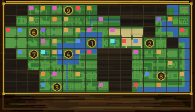
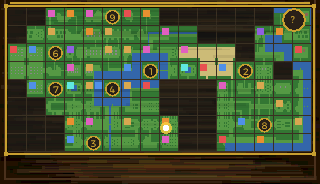
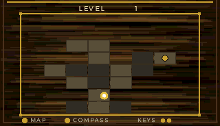
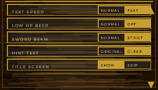

The original Zelda, running natively on the 3DS. The game on the top screen, a map that draws itself on the bottom one, and real 3D.
Bring your own ROM. It is converted right here in your browser.

Same game. Less to keep in your head.
It fills in as you explore. Anything you have found stays marked.
Turn up the slider and Hyrule gets depth.
Pick items with a tap. No more pausing to swap.
Three save slots, and both quests.
It fills in as you play. There is a music player too.
The original pixel shape, at 60 fps.
The top screen is the game as it was. The bottom one is new.

Everything you have found, on one map.

Where you have been, and where the compass points.

Keep it like 1986, or don't.
Drop in your ROM of The Legend of Zelda (USA) and get the 3DS version. Nothing is uploaded.
| Game | The Legend of Zelda (USA), first release (PRG0) |
| Usual file name | Legend of Zelda, The (USA).nesor (U) (PRG0) |
| Not supported | (USA) (Rev 1) / (U) (PRG1), Europe, Japan, re-releases, hacks |
| CRC-32 | D7AE93DF with header3FE272FB without header |
zelda3ds.cia with FBI.zelda3ds.3dsx in sd:/3ds/zelda3ds/ for the Homebrew Launcher.Same game either way. You need a 3DS with custom firmware.
The patcher above, as a program.
.nes file onto it.On a Mac, right-click and choose Open the first time.
No patching. The game reads the ROM itself.
sd:/3ds/zelda3ds/.Wrong ROM? The game will tell you.
No. It is Aldo Nunez's C++ remake of the game, Loz, ported to the 3DS.
So nothing of Nintendo's gets shared. Use a dump of a cartridge you own.
It should, but it has mostly been played on a New 3DS XL.
In sd:/3ds/zelda3ds/. The .cia and the .3dsx share them.
That version is not supported yet.